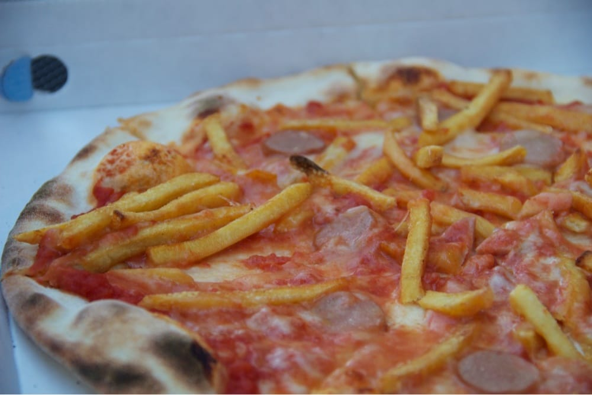

Pizza Gabriel
Preparata per una dieta sana!

Ingredienti
Ricetta
- Preparare l'impasto
- Aggiungere ingredienti
- Mettere in forno preriscaldato a 180°C per circa 15 minuti
Tabella Nutrizionale
| Tipo |
Quantità |
Valore energetico |
Proteine |
Carboidrati |
Grassi |
Fibre |
| Pizza Gabriel |
200g |
450 kcal |
17g |
62g |
16g |
4g |
Back